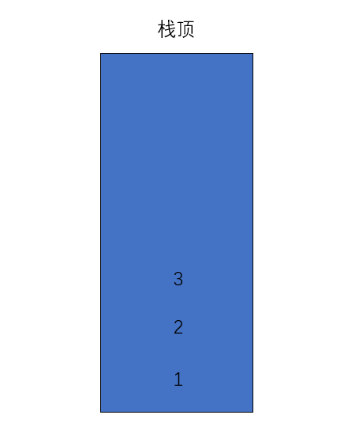

关于动态数组，参见我的上一篇关于动态数组的博文https://www.cnblogs.com/inu6/p/11717129.html
1.什么是栈？
（1）只能从一端添加元素，也只能从一端取出元素，这一端称为栈顶。
（2）栈是一种后进先出的数据结构
画个图：

2.栈的实现
（1）定义一个栈的接口
接口是类的行为的抽象。
以下行为分别为，（1）向栈内添加元素，（2）从栈中取出元素，（3）查看栈顶元素，（4）判断栈是否为空，（5）获取栈内元素的个数
public interface Stack<E> {
void push (E e);
E pop ();
E peek ();
boolean isEmpty ();
int getSize();
}
（2）实现接口
实现类的成员变量和构造方法
public class ArrayStack<E> implements Stack<E> {
private Array<E> array;
//有容量传入的构造方法
public ArrayStack (int capacity) {
array = new Array<>(capacity);
}
//无容量传入的构造方法
public ArrayStack () {
array = new Array<>();
}
}
实现接口定义的方法
//向栈中添加元素
public void push (E e) {
array.addLast(e);
}
//向栈中取出元素
public E pop () {
return array.removeLast();
}
//查看栈顶元素
public E peek () {
return array.getLast();
}
//判断栈是否为空
public boolean isEmpty () {
return array.isEmpty();
}
//查看栈中元素的个数
public int getSize(){
return array.getSize();
}
自定义方法
//查看栈的容量
public int getCatacity() {
return array.getCapacity();
}
重写toString方法
@Override
public String toString () {
StringBuilder stringBuilder = new StringBuilder();
stringBuilder.append("Stack,");
stringBuilder.append("[");
for (int i = 0; i < array.getSize(); i++) {
stringBuilder.append(array.getByIndex(i));
if (i != array.getSize() - 1) {
stringBuilder.append(',');
}
}
stringBuilder.append("] top");
return stringBuilder.toString();
}
3.栈的应用
leetcode第20题 ：有效的括号
给定一个只包括 '('，')'，'{'，'}'，'['，']' 的字符串，判断字符串是否有效。
有效字符串需满足：
左括号必须用相同类型的右括号闭合。
左括号必须以正确的顺序闭合。
注意空字符串可被认为是有效字符串。
示例 1:
输入: "()"
输出: true
示例 2:
输入: "()[]{}"
输出: true
示例 3:
输入: "(]"
输出: false
示例 4:
输入: "([)]"
输出: false
示例 5:
输入: "{[]}"
输出: true
解题思路
借助栈的后进先出的特性，来解决这个对称性比对问题。
思路： 将'(' '[' '{' 装入栈中，如果遇到非这三种括号的类型，则取出栈顶元素与之比较，如果中途有不匹配的，则返回false，如果均匹配，最终栈一定是空的，返回true.
实现：（1）将字符串拆开遍历成一个个的字符型，然后进行一个If判断，如果满足，则装入栈中。
（2）否则进去else子句中，在子句中，进行了4个判断语句；此处可以将这4个语句想象为4个监察，如果有一个不满足，那就不能继续下去；
（3）第一个判断语句验证此时栈是否为空，如果为空，那显然是不对的，没有进行，第二，三，四个判断语句均为验证是否匹配。
（4）如果能顺利的走到最后，那么进行最后一次验证，看栈里面是否为空，为空则返回true。此时整段代码跑完，证明传入的字符串符合规则。
解题代码：
public class Solution {
public boolean isValid(String s) {
ArrayStack<Character> arrayStack = new ArrayStack<>();
for (int i = 0; i< s.length(); i++) {
char c = s.charAt(i);
if (c == '{' || c =='[' || c =='(') {
arrayStack.push(c);
} else {
if (arrayStack.isEmpty()) {
return false;
}
//pop()方法为取出栈顶元素，并且返回元素的值
char top = arrayStack.pop();
if (c == '}' && top != '{') {
return false;
}
if (c == ']' && top != '[') {
return false;
}
if (c == ')' && top != '(') {
return false;
}
}
}
return arrayStack.isEmpty();
}
}
最后
浮于表面看千遍
不如自己练一遍
希望这篇文章对你能够起到帮助！